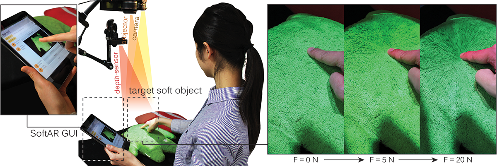

SoftAR: Visually Manipulating Haptic Softness Perception in Spatial Augmented Reality
IEEE Transactions on Visualization and Computer Graphics, and IEEE Intl. Symp. on Mixed and Augmented Reality 2014/2015
We present SoftAR, a novel spatial augmented reality (AR) technique based on a pseudo-haptics mechanism that visually manipulates the sense of softness perceived by a user pushing a soft physical object. Considering the limitations of projection-based approaches that change only the surface appearance of a physical object, we propose two projection visual effects, i.e., surface deformation effect (SDE) and body appearance effect (BAE), on the basis of the observations of humans pushing physical objects. The SDE visualizes a two-dimensional deformation of the object surface with a controlled softness parameter, and BAE changes the color of the pushing hand. Through psychophysical experiments, we confirm that the SDE can manipulate softness perception such that the participant perceives significantly greater softness than the actual softness. Furthermore, fBAE, in which BAE is applied only for the finger area, significantly enhances manipulation of the perception of softness. We create a computational model that estimates perceived softness when SDE+fBAE is applied. We construct a prototype SoftAR system in which two application frameworks are implemented. The softness adjustment allows a user to adjust the softness parameter of a physical object, and the softness transfer allows the user to replace the softness with that of another object.

Overview of SoftAR application. The user can manipulate an object’s softness by projecting the surface deformation and body appearance effect (see supplementary material for motion presentation).
Related Publication:
1.
Parinya Punpongsanon, Daisuke Iwai, Kosuke Sato.
SoftAR: Visually Manipulating Haptic Softness Perception in Spatial Augmented Reality.
IEEE Transactions on Visualization and Computer Graphics (Proceedings of IEEE International Symposium on Mixed and Augmented Reality 2015),
Vol. 21, No. 11, PP. 1279-1288. Fukuoka, Japan, September 2015.
2.
Parinya Punpongsanon, Daisuke Iwai, Kosuke Sato.
A Preliminary Study on Altering Surface Softness Perception using Augmented Color and Deformation.
In Proceedings of IEEE International Symposium on Mixed and Augmented Reality (ISMAR) 2014,
PP. 301-302. Munich, Germany, September 2014.